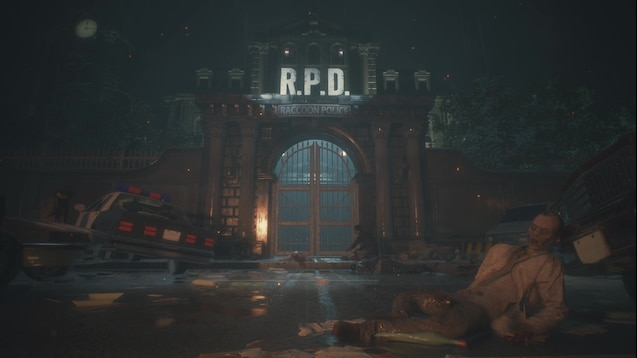
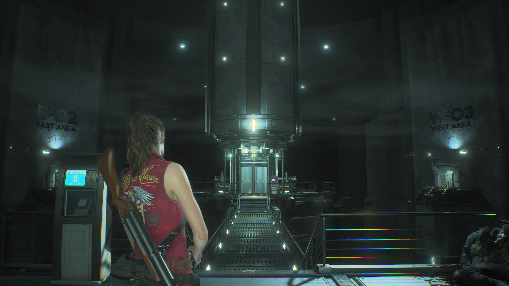
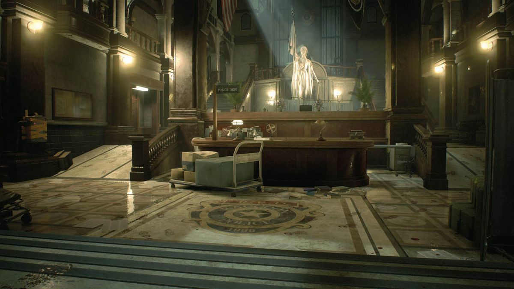
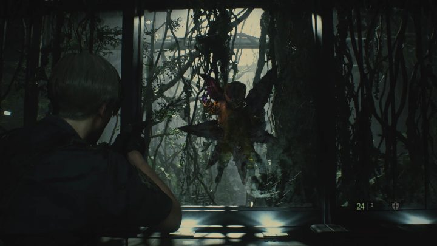

Resident Evil 2 takes place after the events of Resident Evil 1 with the destruction of the Arklay Mountains Mansion. The T-Virus is accidentally released into Raccoon City from an underground Umbrella lab which turns humans into zombies while also causing mutations in other species. By the start of the game, Raccoon City has already begun to fall into ruin. People are either infected or trying to escape the city and almost all police officers are already dead. This game introduces two new main characters into the series, Leon S. Kennedy who is a rookie cop arriving into the city for his first day, and Claire Redfield who is a college student searching for her brother Chris.
Before jumping into the story of Resident Evil 2 Remake players must choose to follow the story of Leon or Claire as they traverse the infection throughout Raccoon City. No matter who you pick, the canon story stays the same although each character has their own objectives and obstacles. The main objective of the game is to survive the Raccoon City Outbreak while also uncovering the truth about what happened. The Raccoon Police Department (RPD) acts as the main setting of the game containing different puzzles and backtracking to unlock and uncover all of the building which used to be a museum. Throughout the RPD a tryant stalks the player throughout the map called Mr. X who will attack the player if he sees them. After escaping the Police Department you uncover the second main setting of the game which is the sewers and an underground Umbrella corporation lab where the virus first got unleashed. In Leon's story he escapes the RPD and runs into Ada Wong who secretly works for Umbrella. After lying to Leon they both go to the underground lab where Leon aquires a sample of the G-Virus which she betrays him for. Causing her to get shot by Annette Birkin and faking her death, losing the G-Virus sample in the process. Leon also learns that Willaim Birkin who Leon has been fighting in boss fights throughout the game was killed by Umbrella soldiers due to insubordination which is what caused the T-Virus outbreak. Claire on the other hand, after escaping the RPD, finds Sherry Birkin which is William and Annette Birkins daughter and helps her escape the city. After the lab self destructs Leon and Claire meet up and escape the city together with Sherry Birkin.



